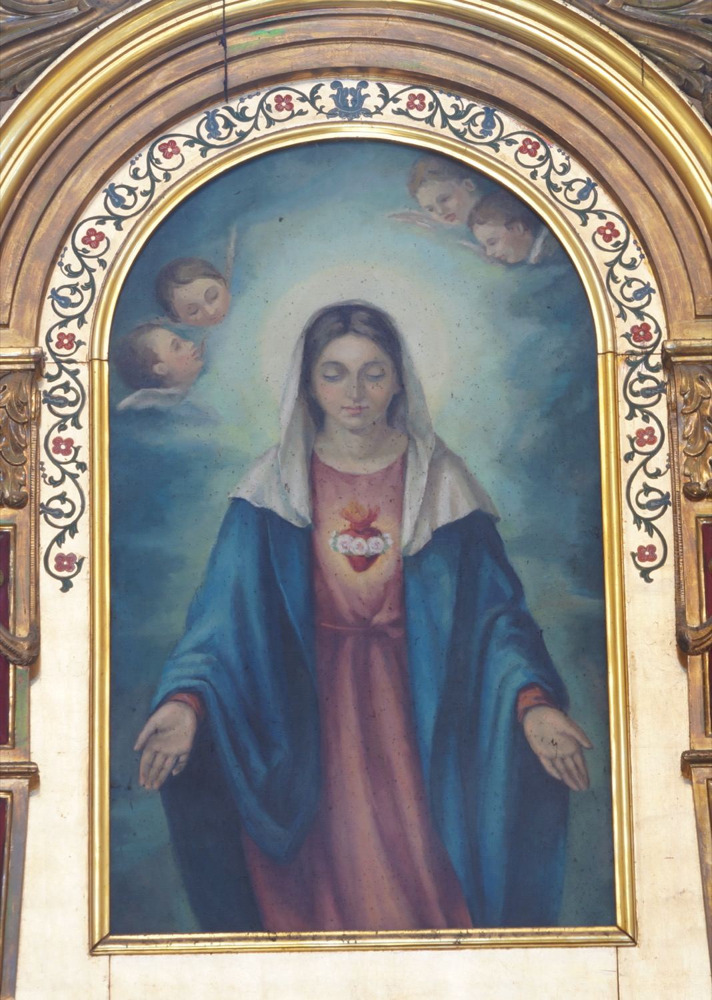

El Inmaculado Corazón de María simboliza el amor de la Virgen hacia Dios y hacia toda la humanidad. En esta pintura aparece representado sobre el pecho de la Virgen con dos de sus elementos más característicos: rodeado por una corona de rosas blancas, en referencia al rosario, que simboliza la pureza y las virtudes de María, y coronado por llamas, que representan el amor ardiente de la Virgen hacia Dios y la humanidad. Esta pintura, como el resto del retablo, es de mediados del siglo XX.